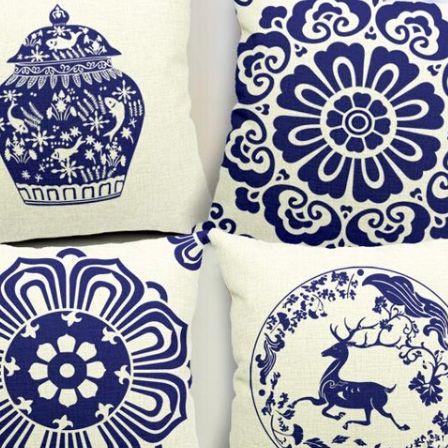
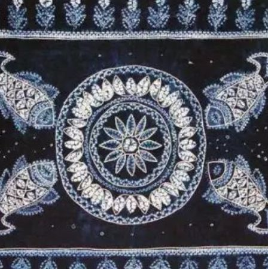
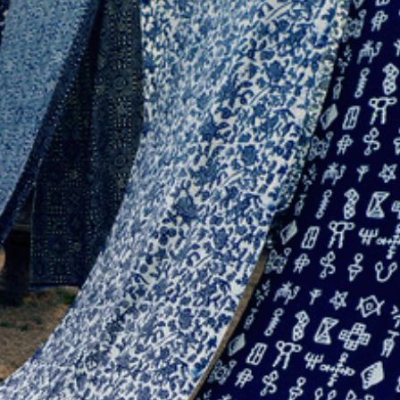

馆藏展览
蓝印花布又称靛蓝花布，俗称药斑布、浇花布等。是中国传统的工艺印染品，镂空版白浆防染印花，距今已有一千三百年历史。最初以蓝草为染料印染而成。蓝印花布用石灰、豆粉合成灰浆烤蓝，采用全棉、全手工纺织、刻版、刮浆等多道印染工艺制成。
扎染手工工艺十分特殊，制作十分讲究，程序十分复杂，每道工序都是十分讲究，庄重、严肃，丝毫马虎不得。扎染手工艺术和其浸染工艺一样，首先都是选择原料、原料配方等方面下功夫。 制作程序为设计、构图、绘画、绣扎、浸泡、浸染、起染、拆线、清洗、晾晒、整理作品、贴熨、装裱等工序方能制成，每道工序都必须严格认真，丝毫不能马虎，才能保证其成功。
- 

- 

- 
<>